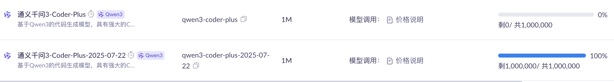

百万 token 用完了，换其它的
文章目录
前言
在之前的文章中，使用阿里百炼接入了 Claude Code ，并且提供了 100 万的免费 token。
奈何不经用，一个小需求就把 token 用完了。
100 万看起来很多，实际也就 1000000 / 1024 / 1024 = 0.9536743164 约等于呀 1M，还不到。
用完了我还不知道，一直以为好像没那么快用完，报如下错误，我还一直以为是平台的问题或者是哪里设置了限制导致的
|
|
后面发现了实际是 token 用完了，并且仅支持 qwen3-coder-plus模型。
可以在大模型服务平台百炼控制台中查看 token 使用情况。 
在这个页面其实还有一个 qwen3-coder-plus-2025-07-22 的模型，还没有使用。
由于在 Claude Code 只能使用 qwen3-coder-plus ，所以这个相当于浪费了。
我想着每个模型都有 100 万免费 token ，模型多起来也还行，不能白白浪费了，毕竟这个模型在 API 调用的情况下是可以用的，只是不能在 Claude Code 使用而已。
经过我一番搜索和研究终于搞定了，主要就是借助 claude-code-route 这个项目来 Claude Code 的请求路由到百炼或者其它平台。
下面正式开始。
安装
开始之前假设你已经安装好了 Claude code ，我们需要做的就是安装 claude-code-route
|
|
配置
在 ~/.claude-code-router/config.json 加入如下配置
api_key 要换成自己的
|
|
改完之后要配置一下 Claude Code 的 url
|
|
启动
通过如下命令来启动
|
|
这种方式会直接把 Claude Code 也一并启动了，很方便，不用各启动一次。
但是我一般会在 Emacs 中使用，所以这种方式就不适合我了，就需要使用下面这种方式先启动 claude-code-router
|
|
启动之后再在 Emacs 中启动 claude code
这样就能用了，玩得愉快。